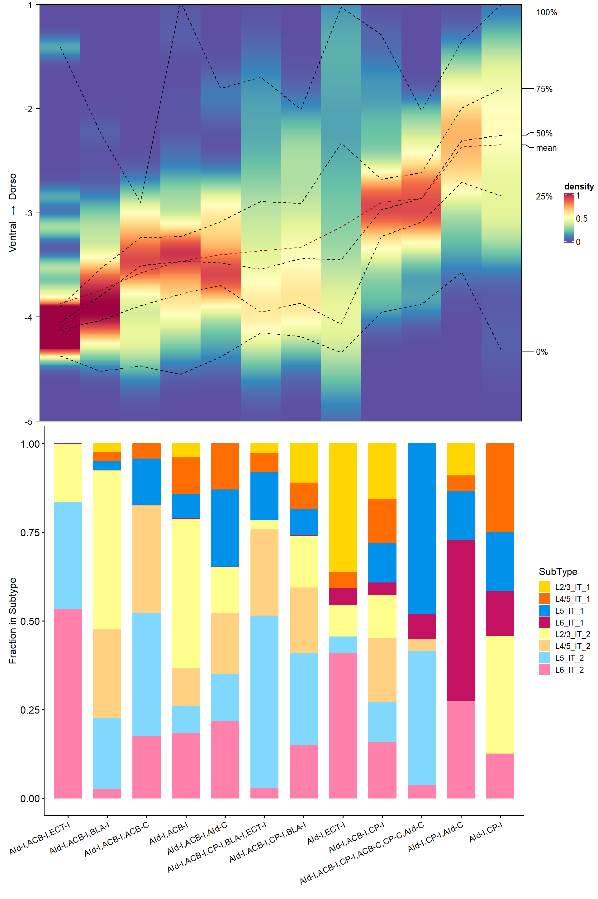
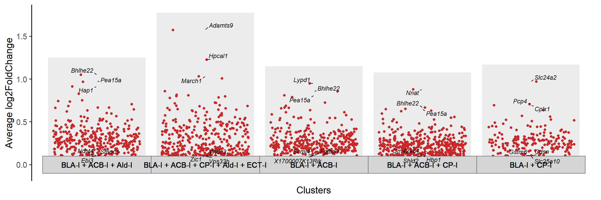
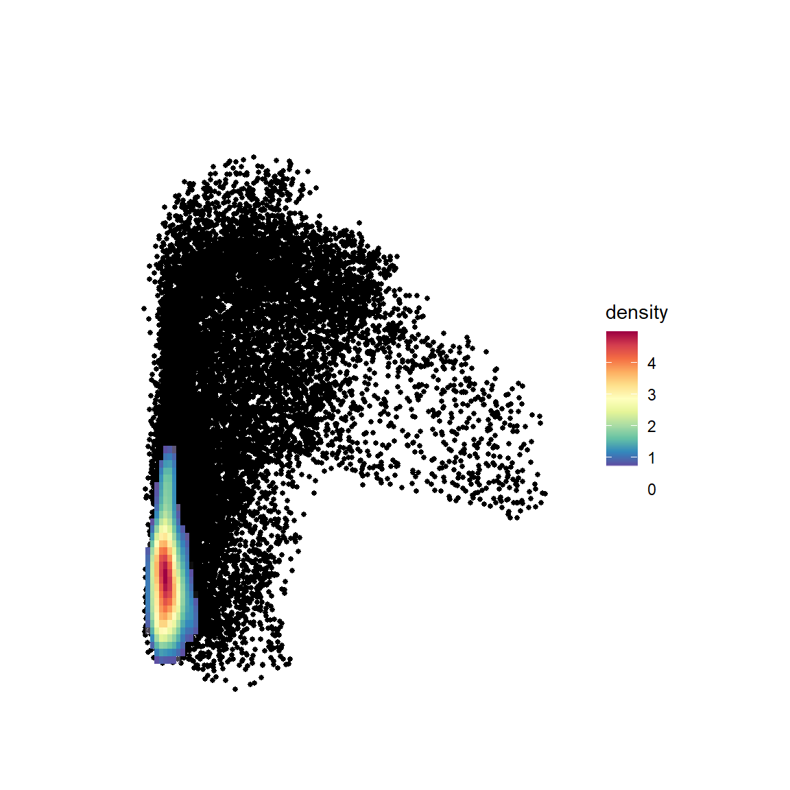
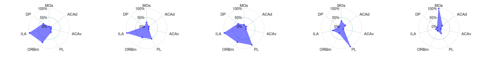
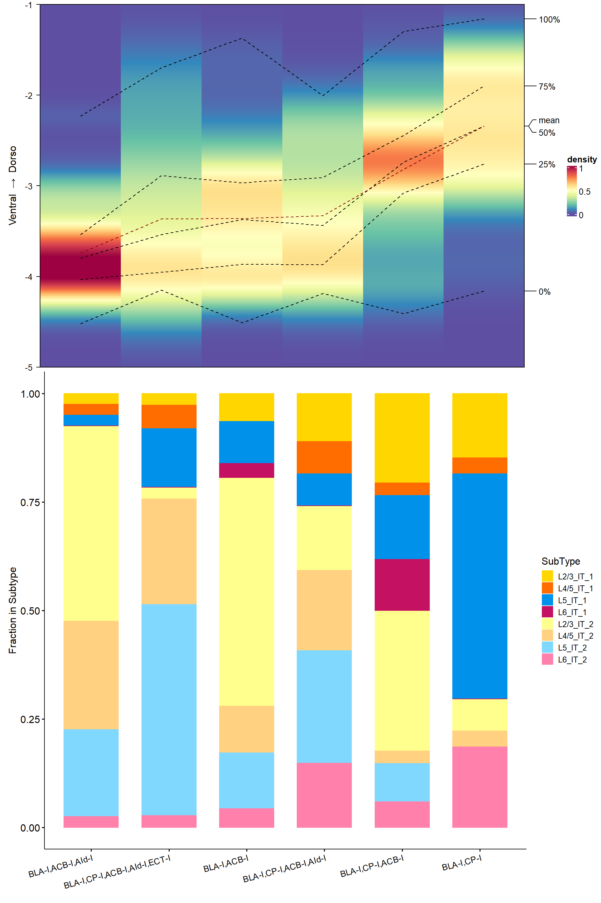
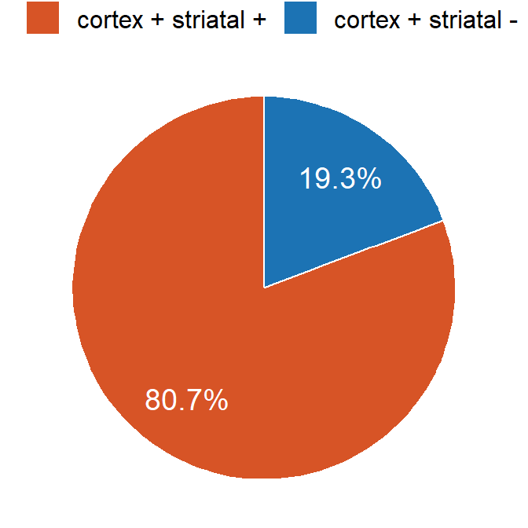
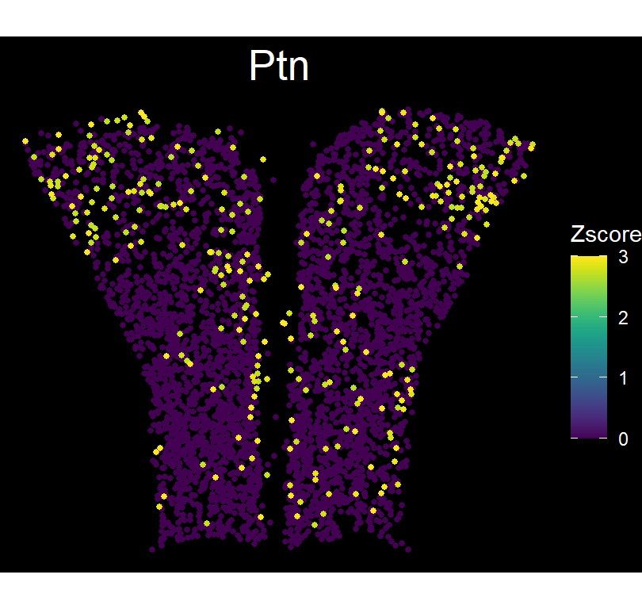

Code
library(Seurat)
library(tidyverse)
library(ggpointdensity)
library(cowplot)
library(RColorBrewer)
library(scCustomize)
library(ggradar)
library(scRNAtoolVis)
library(viridis)
library(Biorplot)
source('bin/Palettes.R')
source('bin/includes.R')library(Seurat)
library(tidyverse)
library(ggpointdensity)
library(cowplot)
library(RColorBrewer)
library(scCustomize)
library(ggradar)
library(scRNAtoolVis)
library(viridis)
library(Biorplot)
source('bin/Palettes.R')
source('bin/includes.R')Adult.Ex <- readRDS('../data/rds/Adult.Ex.rds')
sp.PFC <- readRDS('../data/rds/sp.PFC.rds')Adult.Ex.barcode <- subset(
Adult.Ex,
cells=colnames(Adult.Ex)[which(Adult.Ex$BC_num>0)]
)
Adult.IT.PT.barcode <- subset(Adult.Ex, cells=colnames(Adult.Ex)[which(
(Adult.Ex$BC_num>0 & Adult.Ex$Ex_subtype == "IT") |
(Adult.Ex$BC_num>0 & Adult.Ex$Ex_subtype == "PT" & Adult.Ex$sample == "Adult1")
)])
Adult.IT.barcode <- subset(
Adult.Ex,
cells=colnames(Adult.Ex)[which(Adult.Ex$Ex_subtype=="IT" &
Adult.Ex$BC_num>0)]
)
sp.PFC.Left.ITPT.barcode <- subset(sp.PFC, cells = colnames(sp.PFC)[which(
sp.PFC$ABA_hemisphere=="Left" & sp.PFC$SubType_Layer %in% c("L2/3 IT","L4/5 IT","L5 IT","L6 IT", "L5 PT") & sp.PFC$BC_num>0)])# scRNAseq projection motifs
Barcode <- c('VIS-I','SSp-I','CP-I','AUD-I','RSP-I',
'BLA-I','ACB-I','AId-I','ECT-I',
'ACB-C','ECT-C',
'CP-C','AId-C','RSP-C',
'LHA-I')
seu <- Adult.IT.PT.barcode
seu$BC_motif <- apply(seu@meta.data[,Barcode], 1, function(x){
paste(names(x)[which(x>0)], collapse = ',')
})
sc_motif <- table(seu$BC_motif)
sc_motif <- sc_motif[order(sc_motif, decreasing = T)]
sc_motif <- sc_motif[which(sc_motif>=10 & names(sc_motif) != "")]
sc_seu <- subset(seu, cells=colnames(seu)[which(seu$BC_motif %in% names(sc_motif))])
# spatial projection motifs
seu <- sp.PFC.Left.ITPT.barcode
seu$BC_motif <- apply(seu@meta.data[,Barcode], 1, function(x){
paste(names(x)[which(x>0)], collapse = ',')
})
sp_motif <- table(seu$BC_motif)
sp_motif <- sp_motif[order(sp_motif, decreasing = T)]
sp_motif <- sp_motif[which(sp_motif>=10)]
sp_seu <- subset(seu, cells=colnames(seu)[which(seu$BC_motif %in% names(sp_motif))])
# scRNAseq and spatial common projection motifs
top50_motif <- names(sc_motif)
top50_motif <- top50_motif[which(top50_motif %in% unique(sp_seu$BC_motif))]
top50_motif <- top50_motif[1:50]
sc_seu <- subset(sc_seu, cells=colnames(sc_seu)[which(sc_seu$BC_motif %in% top50_motif)])
sp_seu <- subset(sp_seu, cells=colnames(sp_seu)[which(sp_seu$BC_motif %in% top50_motif)])
# motifs sort by transcriptome subtype
df_transcriptom <- as.data.frame.array(table(sc_seu$BC_motif, sc_seu$SubType))
df_transcriptom <- df_transcriptom/rowSums(df_transcriptom)
df_order <- data.frame(
"motifs" = rownames(df_transcriptom),
"max_subtype" = apply(df_transcriptom, 1, function(x){
colnames(df_transcriptom)[which.max(x)]
}),
"max_value" = apply(df_transcriptom, 1, function(x){
max(x)
})
)
df_order$max_subtype <- factor(
df_order$max_subtype,
levels = c("L2/3_IT_1","L2/3_IT_2","L4/5_IT_1","L4/5_IT_2","L5_IT_1","L5_IT_2",
"L6_IT_1","L6_IT_2","L5_PT_1","L5_PT_2"))
df_order <- arrange(df_order, max_subtype, desc(max_value))
motifs_order <- df_order$motifs
sp_seu$BC_motif <- factor(sp_seu$BC_motif, levels = motifs_order)
df_spatial <- as.data.frame.array(table(sp_seu$BC_motif, sp_seu$ABA_metaRegion))
df_spatial <- df_spatial/rowSums(df_spatial)AId_motifs <- top50_motif[grep("AId-I",top50_motif)]
AId_motifs <- AId_motifs[-match("AId-I",AId_motifs)]
AId_motifs_order <- c("AId-I,CP-I", "AId-I,CP-I,AId-C",
"AId-I,ACB-I,CP-I,ACB-C,CP-C,AId-C",
"AId-I,ACB-I,CP-I", "AId-I,ECT-I", "AId-I,ACB-I,CP-I,BLA-I",
"AId-I,ACB-I,CP-I,BLA-I,ECT-I", "AId-I,ACB-I,AId-C",
"AId-I,ACB-I","AId-I,ACB-I,ACB-C","AId-I,ACB-I,BLA-I",
"AId-I,ACB-I,ECT-I")
df <- sp_seu@meta.data[which(sp_seu$BC_motif %in% AId_motifs),c("DV_new","BC_motif")]
df_mean <-
df |>
group_by(BC_motif) |>
dplyr::summarize(across(1, ~ mean(.x, na.rm = TRUE)))
df_mean <- df_mean[order(df_mean$DV_new, decreasing = F),]
df_mean$rename <- factor(rev(AId_motifs_order), levels = rev(AId_motifs_order))
cell_DV1 <- sp_seu$DV_new[which(sp_seu$BC_motif==df_mean$BC_motif[1])]
df <- data.frame(as.numeric(cell_DV1), row.names = 1:length(cell_DV1))
colnames(df) <- df_mean$rename[1]
for (i in 2:12){
cell_DVi <- sp_seu$DV_new[which(sp_seu$BC_motif==df_mean$BC_motif[i])]
df_i <- data.frame(as.numeric(cell_DVi), row.names = 1:length(cell_DVi))
colnames(df_i) <- df_mean$rename[i]
df <- merge(df, df_i, by="row.names", all=T)
df <- df[,-1]
}
p1 <- ComplexHeatmap::densityHeatmap(df, ylab="Ventral → Dorso", title="",ylim=c(-5,-1),
show_quantiles =T,
show_column_names = FALSE)df <- sc_seu@meta.data[which(sc_seu$BC_motif %in% AId_motifs),c("BC_motif","SubType")]
df <- as.data.frame.array(table(df$BC_motif, df$SubType))
df_norm <- df/rowSums(df)
df_norm$motifs <- rownames(df_norm)
df_norm <- pivot_longer(df_norm, !motifs, names_to = "SubType", values_to = "Value")
df_norm$motifs <- factor(df_norm$motifs, levels = df_mean$BC_motif, labels = df_mean$rename)
IT_SubType <- c("L2/3_IT_1", "L4/5_IT_1", "L5_IT_1", "L6_IT_1",
"L2/3_IT_2","L4/5_IT_2", "L5_IT_2", "L6_IT_2")
df_norm$SubType <- factor(df_norm$SubType, levels = IT_SubType)
p2 <-
Bior_BarPlot(df_norm, "motifs", "Value", fill = "SubType", color = "SubType",
label = F, palette = col_SubType, lab.pos = "in") +
theme(legend.position = "right", legend.key.size=unit(0.5, "cm"),
axis.text.x = element_text(angle = 25, hjust = 1, size = 10),
plot.margin = margin(0,0,0,10)) +
labs(x="", y="Fraction in Subtype")
#p2FigureS6_A <-
cowplot::plot_grid(ggplotify::as.ggplot(p1),p2,nrow = 2, align = "v",
rel_heights = c(0.9,1))
FigureS6_A
ggsave("../pdf/FigureS6/FigureS6_A.pdf", plot = FigureS6_A,
height = 15, width = 10, units = "in")seu <- subset(
Adult.Ex,
cells=colnames(Adult.Ex)[which(Adult.Ex$Ex_subtype=="IT" &
Adult.Ex$BC_num>0)])
seu$group <- "Other"
seu$group[which(seu$`BLA-I`>0 & seu$`ACB-I`>0 & seu$BC_num==2)] <- "BLA-I + ACB-I"
seu$group[which(seu$`BLA-I`>0 & seu$`CP-I`>0 & seu$BC_num==2)] <- "BLA-I + CP-I"
seu$group[which(seu$`BLA-I`>0 & seu$`ACB-I`>0 & seu$`AId-I`>0 & seu$BC_num==3)] <- "BLA-I + ACB-I + AId-I"
seu$group[which(seu$`BLA-I`>0 & seu$`ACB-I`>0 & seu$`CP-I`>0 & seu$BC_num==3)] <- "BLA-I + ACB-I + CP-I"
seu$group[which(seu$`BLA-I`>0 & seu$`ACB-I`>0 & seu$`CP-I`>0 & seu$`AId-I`>0 & seu$`ECT-I`>0 & seu$BC_num==5)] <- "BLA-I + ACB-I + CP-I + AId-I + ECT-I"
#seu <- subset(seu, cells=colnames(seu)[which(!seu$group=="")])
seu$group <- factor(seu$group, levels = c("BLA-I + ACB-I + AId-I", "BLA-I + ACB-I + CP-I + AId-I + ECT-I", "BLA-I + ACB-I", "BLA-I + ACB-I + CP-I", "BLA-I + CP-I", "Other"))
#Idents(seu) <- "group"
#DEGs <- FindAllMarkers(seu, logfc.threshold = 0.1, min.pct = 0.1, only.pos = T)
#DEGs$Group <- "not"
#DEGs$Group[which(DEGs$avg_log2FC>0.5 & DEGs$p_val_adj < 0.01)] <- "Up"
#DEGs <- DEGs[which(DEGs$cluster != "Other"),]
#saveRDS(DEGs, '../data/rds/DEGs_BLA_motifs.rds')
DEGs <- readRDS('../data/rds/DEGs_BLA_motifs.rds')FigureS6_B_1 <-
jjVolcano(diffData = DEGs,
topGeneN = 3,
tile.col = rep("lightgray",6),
aesCol = c("navy","firebrick3"),
angle=0,
size=3,
pSize=1.5,
log2FC.cutoff = 0.1,
fontface = 'italic',
legend.position = c(0.8,0.2),
flip = F,
min.segment.length = 0) +
theme(legend.position = "none")
FigureS6_B_1
ggsave("../pdf/FigureS6/FigureS6_B_1.pdf", plot = FigureS6_B_1,
height = 4, width = 12, units = "in")seu <- sp_seu
df <- seu@meta.data[,c("ML_new","DV_new","slice","BC_motif")]
# "BLA-I,ACB-I,AId-I" "CP-I,BLA-I,ACB-I,AId-I" "BLA-I,ACB-I" "CP-I,BLA-I,ACB-I" "CP-I,BLA-I"
df_motif <- df[which(df$BC_motif=="BLA-I,ACB-I,AId-I"),]
colormap <- colorRampPalette(rev(brewer.pal(11,'Spectral')))(85)
FigureS6_B_2 <-
ggplot(df, aes(ML_new, DV_new)) +
geom_point(color="black", size=1) +
stat_density2d(data=df_motif, geom = "raster", aes(fill = ..density..),
contour = FALSE) +
scale_fill_gradientn(colours = c(rep("transparent",15),colormap)) +
theme_void() +
#theme(legend.position = "none") +
ylim(-5,0) +
xlim(0,3) +
coord_fixed()
FigureS6_B_2
ggsave("../pdf/FigureS6/FigureS6_B_2/BLA-I,ACB-I,AId-I.pdf", plot = FigureS6_B_2,
height = 6, width = 6, units = "in", bg="transparent")BLA_motif <- c("BLA-I,ACB-I,AId-I","CP-I,BLA-I,ACB-I,AId-I","BLA-I,ACB-I","CP-I,BLA-I,ACB-I","CP-I,BLA-I")
seu <- subset(sp_seu, cells = colnames(sp_seu)[which(sp_seu$BC_motif %in% BLA_motif)])
seu$ABA_metaRegion <- factor(
seu$ABA_metaRegion,
levels = c("MOs","ACAd","ACAv","PL","ORBm","ILA","DP"))
mat <- table(seu$BC_motif, seu$ABA_metaRegion)
mat <- t(apply(mat, 1, function(x){(x-min(x))/(max(x)-min(x))}))
mat <- mat[BLA_motif,]
mat <- as_tibble(mat, rownames = "group")
plist <- list()
for (i in 1:length(BLA_motif)){
plist[[i]] <-
ggradar(mat[i,], fill = T,
group.point.size = 2, group.line.width = 0.5,
background.circle.colour = "white",
group.colours = "blue") +
theme(plot.title = element_text(hjust=0.5))
}
FigureS6_B_3 <- plot_grid(plotlist=plist, ncol=5)
FigureS6_B_3
ggsave("../pdf/FigureS6/FigureS6_B_3.pdf", plot = FigureS6_B_3,
height = 3, width = 25, units = "in")BLA_motifs <- top50_motif[grep("BLA-I",top50_motif)]
BLA_motifs <- BLA_motifs[-match("BLA-I",BLA_motifs)]
BLA_motifs_order <- c('BLA-I,CP-I','BLA-I,CP-I,ACB-I','BLA-I,CP-I,ACB-I,AId-I',
'BLA-I,ACB-I','BLA-I,CP-I,ACB-I,AId-I,ECT-I','BLA-I,ACB-I,AId-I'
)
df <- sp_seu@meta.data[which(sp_seu$BC_motif %in% BLA_motifs),c("DV_new","BC_motif")]
df_mean <-
df |>
group_by(BC_motif) |>
dplyr::summarize(across(1, ~ mean(.x, na.rm = TRUE)))
df_mean <- df_mean[order(df_mean$DV_new, decreasing = F),]
df_mean$rename <- factor(rev(BLA_motifs_order), levels = rev(BLA_motifs_order))
cell_DV1 <- sp_seu$DV_new[which(sp_seu$BC_motif==df_mean$BC_motif[1])]
df <- data.frame(as.numeric(cell_DV1), row.names = 1:length(cell_DV1))
colnames(df) <- df_mean$rename[1]
for (i in 2:6){
cell_DVi <- sp_seu$DV_new[which(sp_seu$BC_motif==df_mean$BC_motif[i])]
df_i <- data.frame(as.numeric(cell_DVi), row.names = 1:length(cell_DVi))
colnames(df_i) <- df_mean$rename[i]
df <- merge(df, df_i, by="row.names", all=T)
df <- df[,-1]
}
p1 <- ComplexHeatmap::densityHeatmap(df, ylab="Ventral → Dorso", title="",ylim=c(-5,-1),
show_quantiles =T,
show_column_names = FALSE)df <- sc_seu@meta.data[which(sc_seu$BC_motif %in% BLA_motifs),c("BC_motif","SubType")]
df <- as.data.frame.array(table(df$BC_motif, df$SubType))
df_norm <- df/rowSums(df)
df_norm$motifs <- rownames(df_norm)
df_norm <- pivot_longer(df_norm, !motifs, names_to = "SubType", values_to = "Value")
df_norm$motifs <- factor(df_norm$motifs, levels = df_mean$BC_motif, labels = df_mean$rename)
IT_SubType <- c("L2/3_IT_1", "L4/5_IT_1", "L5_IT_1", "L6_IT_1",
"L2/3_IT_2","L4/5_IT_2", "L5_IT_2", "L6_IT_2")
df_norm$SubType <- factor(df_norm$SubType, levels = IT_SubType)
p2 <-
Bior_BarPlot(df_norm, "motifs", "Value", fill = "SubType", color = "SubType",
label = F, palette = col_SubType, lab.pos = "in") +
theme(legend.position = "right", legend.key.size=unit(0.5, "cm"),
axis.text.x = element_text(angle = 15, hjust = 1, size = 10),
plot.margin = margin(0,0,0,10)) +
labs(x="", y="Fraction in Subtype")
#p2FigureS6_C <-
cowplot::plot_grid(ggplotify::as.ggplot(p1),p2,nrow = 2, align = "v",
rel_heights = c(0.7,1))
FigureS6_C
ggsave("../pdf/FigureS6/FigureS6_C.pdf", plot = FigureS6_C,
height = 15, width = 10, units = "in")Barcode <- c('VIS-I','SSp-I','CP-I','AUD-I','RSP-I',
'BLA-I','ACB-I','ENTl-I','AId-I','ECT-I',
'ACB-C','PL-C','ECT-C','ENTl-C',
'BLA-C','CP-C','AId-C','RSP-C',
'MD-I','RE-I','DR-I','VTA-I','LHA-I','SC-I')
cortex <- c('VIS-I','SSp-I','AUD-I','RSP-I',
'BLA-I','ENTl-I','AId-I','ECT-I',
'PL-C','ECT-C','ENTl-C','BLA-C','AId-C','RSP-C')
striatal <- c('CP-I','ACB-I','ACB-C','CP-C')
BC_mat <- Adult.IT.barcode@meta.data[,c(cortex, striatal)]
df <- data.frame(
'Type' = c('cortex + striatal -', 'cortex - striatal +', 'cortex + striatal +'),
'Cellnum' = c(
length(which(rowSums(Adult.IT.barcode@meta.data[,cortex],na.rm = T)>0 &
rowSums(Adult.IT.barcode@meta.data[,striatal],na.rm = T)==0)),
length(which(rowSums(Adult.IT.barcode@meta.data[,cortex],na.rm = T)==0 &
rowSums(Adult.IT.barcode@meta.data[,striatal],na.rm = T)>0)),
length(which(rowSums(Adult.IT.barcode@meta.data[,cortex],na.rm = T)>0 &
rowSums(Adult.IT.barcode@meta.data[,striatal],na.rm = T)>0))
)
)
df <- df[c(1,3),]
df$Cellnum <- df$Cellnum/sum(df$Cellnum)
df$label <- paste0(round(df$Cellnum,3)*100,'%')
FigureS6_D <-
ggplot(df, aes(x='', y=Cellnum, fill=Type)) +
geom_bar(stat="identity", width=1,color="white",
position = position_stack(reverse =T)) +
coord_polar("y", start=0) +
theme_void() +
theme(text = element_text(size = 15),
plot.title = element_text(size=20, hjust = 0.5),
legend.title = element_blank(),
legend.position = "top") +
geom_text(aes(x = 1.2, label = label), color = "white", size=5,
position = position_stack(reverse =T,vjust=0.5)) +
scale_fill_manual(values = c("cortex + striatal -"="#1c73b4",
"cortex + striatal +"="#d75426")) +
guides(fill = guide_legend(ncol = 2,byrow = TRUE,reverse = T))
FigureS6_D
ggsave("../pdf/FigureS6/FigureS6_D.pdf", plot = FigureS6_D,
height = 3.5, width = 3.5, units = "in")slice <- 'IT_slice_15'
# 'Cbln2','Ptn',"Nnat","Efnb3"
gene <- 'Ptn'
limits <- c(0,3)
df <- data.frame(
X = sp.PFC$X,
Y = sp.PFC$Y,
Zscore = scale(log1p(sp.PFC@assays$RNA@counts[gene,]))
)
df <- df[which(sp.PFC$slice==slice & sp.PFC$ABA_PFC=='PFC'),]
df$Zscore[df$Zscore<limits[1]] <- limits[1]
df$Zscore[df$Zscore>limits[2]] <- limits[2]
df <- df[order(df$Zscore),]
FigureS6_E <-
ggplot(df,aes(x=X,y=Y)) +
geom_point(aes(colour=Zscore), size=1) +
scale_color_gradientn(colours = viridis(n = 256, option = "D", direction = 1),
limits = limits) +
ggdark::dark_theme_void() +
labs(title = gene) +
theme(plot.title = element_text(size = 20, hjust = 0.5)) +
coord_fixed()
FigureS6_E
ggsave("../pdf/FigureS6/FigureS6_E/Ptn.png", plot = FigureS6_E,
height = 4, width = 4.22, units = "in")